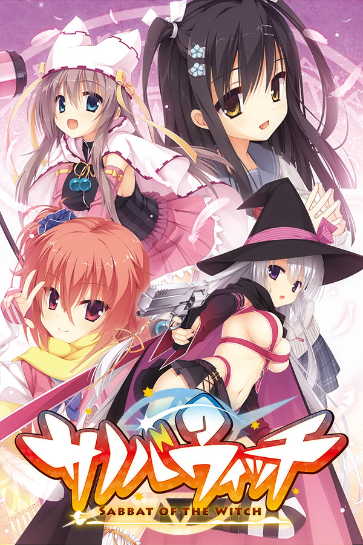

Patches the FHD version of Sabbat of the Witch with English text and UI.
sw_en_patcher.exeSanoba Witch game folder or browse to it manuallyInstallpatch_manual ZIPunencrypted.xp3 and version.dll into the game folderOnce installed, use the language option at the top right to switch the game to English.
unencrypted.xp3 and version.dll from the game folderThis is an unofficial, non-commercial fan patch. All rights to the original game and its assets belong to Yuzusoft and the relevant publishers, including HIKARI FIELD and NekoNyan. This project is not affiliated with or endorsed by any of them.
If you'd like to support me, you can do so via Patreon.